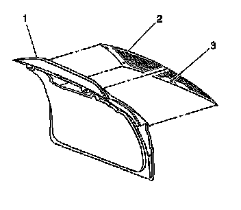

Liftgate Window Glass: Service and Repair
Liftgate Window Replacement
Tools Required
* J 24402-A Glass Sealant Cold Knife Remover
* J 39032 Stationary Glass Removal Tool
* Urethane Adhesive Kit GM P/N 12346392 or Equivalent
* Isopropyl Alcohol or Equivalent
* Cartridge-type Caulking Gun
* Commercial-type Utility Knife
* Razor Blade Scraper
* Suction Cups
* Plastic Paddle
Removal Procedure
Caution: If a window is cracked but still intact, crisscross the window with masking tape in order to reduce the risk of damage or personal injury.
Important: Before cutting out a stationary window, apply a double layer of masking tape around the perimeter of the painted surfaces and inner trim.
1. Open the liftgate.
2. Remove the liftgate trim panel. Refer to Liftgate Trim Panel Replacement (w/o TB5) (Service and Repair)Liftgate Trim Panel Replacement (w/TB5) (Service and Repair) .
3. Remove the rear wiper motor. Refer to Liftgate Wiper Motor Replacement (Liftgate Wiper Motor Replacement) .
4. Disconnect the rear window defogger connector.
Caution: If broken glass falls into the defroster outlets, it can be blown into the passenger compartment and cause personal injury.
5. Cover to protect the following parts from broken glass:
1. Upper dash pad
2. Defroster outlets and A/C outlets
3. Seats and carpeting

Caution: Refer to Glass and Sheet Metal Handling Caution .
Important: Keep the cutting edge of the tool against the window.
6. Separate the urethane adhesive from the window.
* Leave a base of urethane on the pinchweld flange.
* The only suitable lubrication is clear water.
* Use J 24402-A , J 39032 or equivalent in order to remove the window.

7. With the aid of an assistant, use the suction cups in order to lift the liftgate window (2) from the opening.
Installation Procedure
1. Install the stationary window into the opening. Refer to Adhesive Installation of Stationary Windows (Adhesive Installation of Stationary Windows) .
2. Reconnect the rear window defogger connector.
3. Install the wiper motor. Refer to Liftgate Wiper Motor Replacement (Liftgate Wiper Motor Replacement) .
4. Install the liftgate trim panel. Refer to Liftgate Trim Panel Replacement (w/o TB5) (Service and Repair)Liftgate Trim Panel Replacement (w/TB5) (Service and Repair) .
5. Close the liftgate.
6. Remove the double layer of masking tape around the perimeter of the painted surfaces and the interior trim.